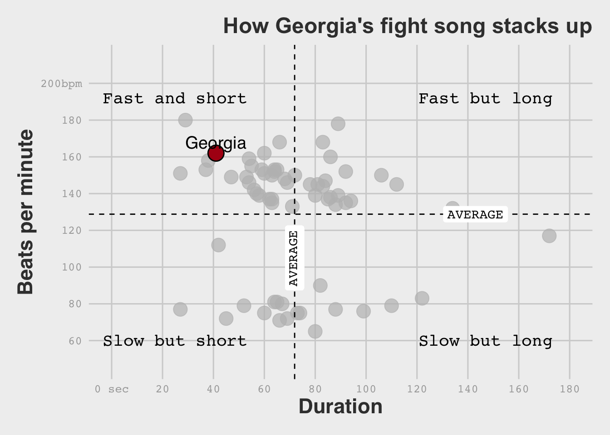

Visualization
This exercise focused on recreating a figure from a project from FiveThirtyEight entitled “Our Guide To The Exuberant Nonsense Of College Fight Songs.” The project lets you to choose a school, which will emphasize it on the graphic and allows you to see where it’s school fight song compares to other schools regarding it’s beats per minute (bpm) and duration (in seconds). I chose to recreate the graphic when it focuses on the University of Georgia to the best of my ability. I chose to exclude the right image showing “fight song cliches.” The following section shows the process of putting it together.
Here is the source project from FiveThirtyEight
Here is the GitHub repository for the data
Original Graphic
Loading the required packages
#Loading required packages
library(tidyverse)
library(here)## here() starts at /Users/ryangrunert/Desktop/Fall2021_Classes/MADA/RyanGrunert-MADA-portfoliolibrary(ggthemes)
library(scales)##
## Attaching package: 'scales'## The following object is masked from 'package:purrr':
##
## discard## The following object is masked from 'package:readr':
##
## col_factorlibrary(gghighlight)
library(ggtext)Data Import and Preparation
First we need to import the data into R and prepare it for creating the visualization. The data was already organized well, so all that is needed is to create a separate data frame containing the data for the Georgia fight song. This is so we can emphasize it on the graphic later.
#Importing the data into R
data_location <- here::here("data", "fight-songs", "fight-songs.csv")
fightsongsdf <- read.csv(data_location)
str(fightsongsdf)## 'data.frame': 65 obs. of 23 variables:
## $ school : chr "Notre Dame" "Baylor" "Iowa State" "Kansas" ...
## $ conference : chr "Independent" "Big 12" "Big 12" "Big 12" ...
## $ song_name : chr "Victory March" "Old Fight" "Iowa State Fights" "I'm a Jayhawk" ...
## $ writers : chr "Michael J. Shea and John F. Shea" "Dick Baker and Frank Boggs" "Jack Barker, Manly Rice, Paul Gnam, Rosalind K. Cook" "George \"Dumpy\" Bowles" ...
## $ year : chr "1908" "1947" "1930" "1912" ...
## $ student_writer : chr "No" "Yes" "Yes" "Yes" ...
## $ official_song : chr "Yes" "Yes" "Yes" "Yes" ...
## $ contest : chr "No" "No" "No" "No" ...
## $ bpm : int 152 76 155 137 80 153 180 81 149 159 ...
## $ sec_duration : int 64 99 55 62 67 37 29 65 47 54 ...
## $ fight : chr "Yes" "Yes" "Yes" "No" ...
## $ number_fights : int 1 4 5 0 6 0 5 17 2 8 ...
## $ victory : chr "Yes" "Yes" "No" "No" ...
## $ win_won : chr "Yes" "Yes" "No" "No" ...
## $ victory_win_won: chr "Yes" "Yes" "No" "No" ...
## $ rah : chr "Yes" "No" "Yes" "No" ...
## $ nonsense : chr "No" "No" "No" "Yes" ...
## $ colors : chr "Yes" "Yes" "No" "No" ...
## $ men : chr "Yes" "No" "Yes" "Yes" ...
## $ opponents : chr "No" "No" "No" "Yes" ...
## $ spelling : chr "No" "Yes" "Yes" "No" ...
## $ trope_count : int 6 5 4 3 3 2 4 4 6 3 ...
## $ spotify_id : chr "15a3ShKX3XWKzq0lSS48yr" "2ZsaI0Cu4nz8DHfBkPt0Dl" "3yyfoOXZQCtR6pfRJqu9pl" "0JzbjZgcjugS0dmPjF9R89" ...#Creating a data frame with just the UGA row for plotting
fightsongsUGA <- filter(fightsongsdf, school == "Georgia")Creating the Base Scatterplot
After importing and preparing the data, we can begin organizing the base graphic. The following section correctly labels and places both the axes, adds the title in the correct position, changes the theme to match, and adds all the data points for the school fight songs, at the correct size, on the graph.
ggplot(fightsongsdf) +
theme_fivethirtyeight() +
scale_color_fivethirtyeight() +
geom_point(aes(x = sec_duration, y = bpm), #Adds all the dots in the graph
show.legend = FALSE,
size = 5) +
theme(plot.title = element_text(hjust = 1, family = "Arial", face = "bold"),
axis.text.x = element_text(family = "mono", color = "#A9A9A9"),
axis.text.y = element_text(family = "mono", color = "#A9A9A9"),
axis.title.x = element_text(face = "bold"),
axis.title.y = element_text(face = "bold")) +
ggtitle("How Georgia's fight song stacks up") +
xlab("Duration") +
scale_x_continuous(breaks = c(0, 20, 40, 60, 80, 100, 120, 140, 160, 180),
limits = c(0, 180),
labels = c("0 sec", "20", "40", "60", "80", "100", "120","140", "160", "180")) +
ylab("Beats per minute") +
scale_y_continuous(breaks = c(60, 80, 100, 120, 140, 160, 180, 200),
limits = c(60, 200),
labels = c("60", "80", "100", "120","140", "160", "180", "200bpm"),
expand = c(0.15, 0))
Formatting the Data on the Graphic
This next section adds code to emphasize the Georgia point and it’s color, as well as add in the vertical and horizontal lines that delineate the average bpm and duration of the fight songs of all the schools.
ggplot(fightsongsdf) +
theme_fivethirtyeight() +
scale_color_fivethirtyeight() +
geom_point(aes(x = sec_duration, y = bpm), #Adds all the dots in the graph
show.legend = FALSE,
size = 5) +
geom_point(data = fightsongsUGA, #This adds the black outline to the red UGA dot
aes(x =sec_duration, y = bpm),
color = "black",
size = 6) +
geom_point(data = fightsongsUGA, #This adds the red UGA dot
aes(x =sec_duration, y = bpm),
color = "#AF1616",
size = 5) +
gghighlight(school == "Georgia") + #Highlights only the UGA dot, grays out the rest
geom_hline(yintercept = mean(fightsongsdf$bpm), #Adds the horizontal average line
linetype = "dashed") +
geom_vline(xintercept = mean(fightsongsdf$sec_duration), #Adds the vertical average line
linetype = "dashed") +
theme(plot.title = element_text(hjust = 1, family = "Arial", face = "bold"),
axis.text.x = element_text(family = "mono", color = "#A9A9A9"),
axis.text.y = element_text(family = "mono", color = "#A9A9A9"),
axis.title.x = element_text(face = "bold"),
axis.title.y = element_text(face = "bold")) +
ggtitle("How Georgia's fight song stacks up") +
xlab("Duration") +
scale_x_continuous(breaks = c(0, 20, 40, 60, 80, 100, 120, 140, 160, 180),
limits = c(0, 180),
labels = c("0 sec", "20", "40", "60", "80", "100", "120","140", "160", "180")) +
ylab("Beats per minute") +
scale_y_continuous(breaks = c(60, 80, 100, 120, 140, 160, 180, 200),
limits = c(60, 200),
labels = c("60", "80", "100", "120","140", "160", "180", "200bpm"),
expand = c(0.15, 0))Creating the Final Graphic
This final section adds in all of the text labels on the graphic in order to finish.
#This is the final plot
ggplot(fightsongsdf) +
theme_fivethirtyeight() +
scale_color_fivethirtyeight() +
geom_point(aes(x = sec_duration, y = bpm), #Adds all the dots in the graph
show.legend = FALSE,
size = 5) +
geom_point(data = fightsongsUGA, #This adds the black outline to the red UGA dot
aes(x =sec_duration, y = bpm),
color = "black",
size = 6) +
geom_point(data = fightsongsUGA, #This adds the red UGA dot
aes(x =sec_duration, y = bpm),
color = "#AF1616",
size = 5) +
gghighlight(school == "Georgia") + #Highlights only the UGA dot, grays out the rest
geom_hline(yintercept = mean(fightsongsdf$bpm), #Adds the horizontal average line
linetype = "dashed") +
geom_vline(xintercept = mean(fightsongsdf$sec_duration), #Adds the vertical average line
linetype = "dashed") +
geom_text(aes(x = 25, y = 192), #Fast and short label in top left
label = "Fast and short",
family = "mono",
size = 5) +
geom_text(aes(x = 147, y = 192), #Fast but long label in top right
label = "Fast but long",
family = "mono",
size = 5) +
geom_text(aes(x = 25, y = 60), #Slow but short label in bottom left
label = "Slow but short",
family = "mono",
size = 5) +
geom_text(aes(x = 147, y = 60), #Slow and long label in bottom right
label = "Slow but long",
family = "mono",
size = 5) +
geom_text(aes(x = 41, y = 168), #This is the Georgia label for the red point
label = "Georgia",
family = "sans",
face = "bold",
size = 5) +
geom_label(aes(x = 143, y = mean(fightsongsdf$bpm)), #This is the AVERAGE label on the y-axis
label = "AVERAGE",
color = "black",
family = "mono",
label.size = NA,
show.legend = NA) +
geom_richtext(aes(x = 71.90769, #This is the AVERAGE label on the x axis
y = 105),
data = fightsongsdf,
label = "AVERAGE",
color = "black",
family = "mono",
label.size = NA,
angle = 90) +
theme(plot.title = element_text(hjust = 1, family = "Arial", face = "bold"),
axis.text.x = element_text(family = "mono", color = "#A9A9A9"),
axis.text.y = element_text(family = "mono", color = "#A9A9A9"),
axis.title.x = element_text(face = "bold"),
axis.title.y = element_text(face = "bold")) +
ggtitle("How Georgia's fight song stacks up") +
xlab("Duration") +
scale_x_continuous(breaks = c(0, 20, 40, 60, 80, 100, 120, 140, 160, 180),
limits = c(0, 180),
labels = c("0 sec", "20", "40", "60", "80", "100", "120","140", "160", "180")) +
ylab("Beats per minute") +
scale_y_continuous(breaks = c(60, 80, 100, 120, 140, 160, 180, 200),
limits = c(60, 200),
labels = c("60", "80", "100", "120","140", "160", "180", "200bpm"),
expand = c(0.15, 0))## Warning: Ignoring unknown parameters: face
Final Thoughts
Overall, I really enjoyed this assignment. Unfortunately, the final graphic I created isn’t exactly the same as the original. I couldn’t add the school colors of the other schools to the grayed out points without exactly specifying each color to each individual point, which would have added a large amount of time. I tried to figure out adding random colors as well, but wasn’t able to. The fonts and white space behind the “AVERAGE” labels on the dashed lines aren’t exactly the same either. I would like to learn more color/font options in ggplot in the future.
I did learn a couple more packages through this project in addition to ggplot2. gghighlight and ggtext were both very useful. gghighlight allowed me to emphasize the red Georgia point, and ggtext allowed me to use geom_richtext to add the vertical “AVERAGE” label. geom_label doesn’t support angle alterations, and geom_text didn’t give me the white background behind the text that I wanted. After using geom_richtext from ggtext here, it will become a go-to for my graphics I will create in the future.
Original Graphic
Final Copy